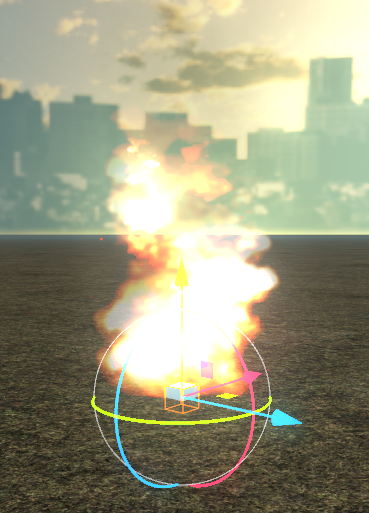
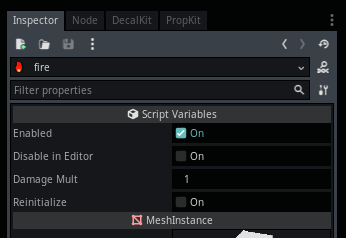

Module: location_fire
Documentation last edited: October 23, 2025 at 14:33 UTC
Description
LocationFire
создаёт очень правдоподобный огонь в локациях, со всеми красивенькими визуальными эффектами, контролем урона, звуковыми эффектами, всеми этими штуками.
ST_FireController
также может контролировать, включён он или выключен. Чёрт, может быть мне реально нужно сделать раздел для ST, которые могут быть как-то связаны с данным модулем... В любом случае, что касается самого узла - он должен быть понятным. Просто создай
LocationFire
и будь счастлив :)


General Information
Root directories list
assets, docs, src
Nodes
Classes
None
Resources
None
Other Scripts
None